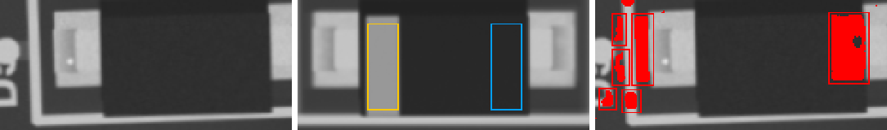
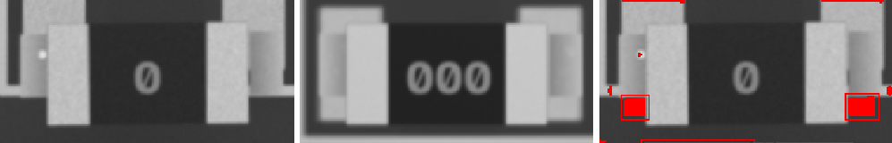
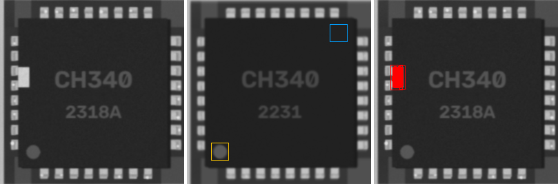
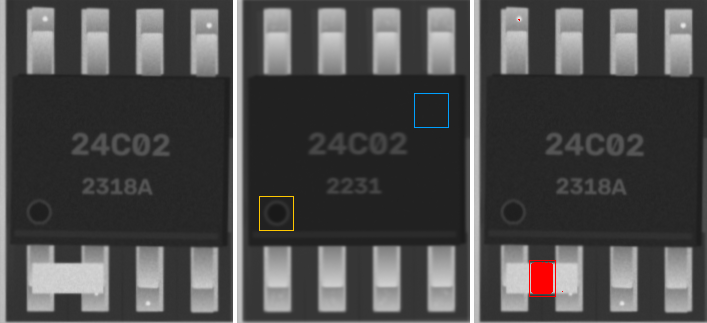
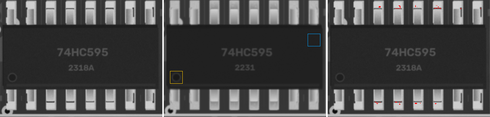

22p · 0402
ANOMALY

ncc 0.888 · ncc_thr 0.6 · mad 6.4 · mad_thr 11.9 · dx_mm 0.093 · dy_mm -0.047 · dtheta_deg -4 · anomaly_px 69
SOD-123 · SOD-123
SHIFT

ncc 0.763 · ncc_thr 0.6 · ncc_180 0.765 · mad 0.9 · mad_thr 7.0 · mark_ncc {'0': 0.162, '180': 0.052} · dx_mm -0.651 · dy_mm 0.07 · dtheta_deg -2.0 · anomaly_px 1796
100k · 0603
MISMATCH
ncc 0.586 · ncc_thr 0.6 · mad 35.3 · mad_thr 11.1 · dx_mm 1.977 · dy_mm -1.791 · dtheta_deg -0.0 · anomaly_px 1777
0R · 1206
SHIFT

ncc 0.951 · ncc_thr 0.6 · mad 4.1 · mad_thr 8.7 · dx_mm -0.047 · dy_mm 0.814 · dtheta_deg -0.0 · anomaly_px 513
CH340 · QFN-32
ANOMALY

ncc 0.773 · ncc_thr 0.6 · ncc_180 0.685 · mad 8.8 · mad_thr 7.6 · mark_ncc {'0': 0.989, '90': 0.033, '180': 0.306, '270': 0.218} · dx_mm -0.023 · dy_mm 0.047 · dtheta_deg -0.0 · anomaly_px 502
24C02 · SOIC-8
ANOMALY

ncc 0.905 · ncc_thr 0.6 · mad 1.3 · mad_thr 7.2 · mark_ncc {'0': 0.969, '180': 0.129} · dx_mm 0.0 · dy_mm 0.0 · dtheta_deg -0.0 · anomaly_px 685
47u · CP_Elec_5x5.8
ncc 0.978 · ncc_thr 0.6 · mad 7.4 · mad_thr 24.6 · mark_ncc {'0': 0.998, '180': -0.423} · dx_mm 0.023 · dy_mm -0.023 · dtheta_deg -0.0 · anomaly_px 0
100n · 0402
ncc 0.971 · ncc_thr 0.6 · mad 6.2 · mad_thr 10.3 · dx_mm -0.023 · dy_mm 0.023 · dtheta_deg -0.0 · anomaly_px 0
100n · 0603
ncc 0.956 · ncc_thr 0.6 · mad 5.6 · mad_thr 8.8 · dx_mm 0.0 · dy_mm 0.023 · dtheta_deg -0.0 · anomaly_px 0
4u7 · 0603
ncc 0.953 · ncc_thr 0.6 · mad 6.4 · mad_thr 8.8 · dx_mm -0.023 · dy_mm 0.0 · dtheta_deg -0.0 · anomaly_px 0
22p · 0603
ncc 0.961 · ncc_thr 0.6 · mad 6.8 · mad_thr 9.5 · dx_mm 0.023 · dy_mm -0.023 · dtheta_deg -0.0 · anomaly_px 0
1u · 0805
ncc 0.968 · ncc_thr 0.6 · mad 5.0 · mad_thr 8.3 · dx_mm 0.023 · dy_mm -0.023 · dtheta_deg -0.0 · anomaly_px 0
10u · 0603
ncc 0.96 · ncc_thr 0.6 · mad 5.7 · mad_thr 8.8 · dx_mm 0.023 · dy_mm 0.023 · dtheta_deg -0.0 · anomaly_px 0
100n · 0603
ncc 0.952 · ncc_thr 0.6 · mad 7.3 · mad_thr 9.3 · dx_mm -0.047 · dy_mm -0.023 · dtheta_deg -0.0 · anomaly_px 0
10u · 0603
ncc 0.972 · ncc_thr 0.6 · mad 6.1 · mad_thr 9.1 · dx_mm 0.0 · dy_mm 0.0 · dtheta_deg -0.0 · anomaly_px 0
1u · 1206
ncc 0.958 · ncc_thr 0.6 · mad 4.1 · mad_thr 8.1 · dx_mm -0.047 · dy_mm 0.023 · dtheta_deg -0.0 · anomaly_px 0
1u · 0805
ncc 0.962 · ncc_thr 0.6 · mad 5.0 · mad_thr 8.1 · dx_mm 0.0 · dy_mm 0.0 · dtheta_deg -0.0 · anomaly_px 0
Tantalum_Case-A · Tantalum_Case-A
ncc 0.951 · ncc_thr 0.6 · mad 8.6 · mad_thr 17.0 · mark_ncc {'0': 0.997, '180': 0.491} · dx_mm -0.023 · dy_mm 0.023 · dtheta_deg -0.0 · anomaly_px 0
10u · 0603
ncc 0.968 · ncc_thr 0.6 · mad 6.1 · mad_thr 8.9 · dx_mm -0.023 · dy_mm -0.023 · dtheta_deg -0.0 · anomaly_px 0
100n · 0603
ncc 0.969 · ncc_thr 0.6 · mad 6.9 · mad_thr 9.5 · dx_mm 0.0 · dy_mm 0.0 · dtheta_deg -0.0 · anomaly_px 0
4u7 · 0402
ncc 0.962 · ncc_thr 0.6 · mad 6.2 · mad_thr 8.9 · dx_mm 0.023 · dy_mm 0.0 · dtheta_deg -0.0 · anomaly_px 0
1u · 0402
ncc 0.954 · ncc_thr 0.6 · mad 6.7 · mad_thr 9.8 · dx_mm 0.0 · dy_mm -0.023 · dtheta_deg -0.0 · anomaly_px 0
1u · 0603
ncc 0.932 · ncc_thr 0.6 · mad 7.3 · mad_thr 9.5 · dx_mm 0.023 · dy_mm -0.023 · dtheta_deg -0.0 · anomaly_px 0
10n · 0402
ncc 0.969 · ncc_thr 0.6 · mad 6.7 · mad_thr 10.1 · dx_mm 0.023 · dy_mm -0.047 · dtheta_deg -0.0 · anomaly_px 0
4u7 · 0805
ncc 0.951 · ncc_thr 0.6 · mad 5.3 · mad_thr 8.5 · dx_mm 0.0 · dy_mm -0.047 · dtheta_deg -0.0 · anomaly_px 0
4u7 · 0805
ncc 0.962 · ncc_thr 0.6 · mad 5.4 · mad_thr 8.6 · dx_mm 0.023 · dy_mm 0.0 · dtheta_deg -0.0 · anomaly_px 0
1u · 0805
ncc 0.945 · ncc_thr 0.6 · mad 4.8 · mad_thr 8.4 · dx_mm 0.047 · dy_mm 0.047 · dtheta_deg -0.0 · anomaly_px 0
10n · 0805
ncc 0.962 · ncc_thr 0.6 · mad 4.5 · mad_thr 8.0 · dx_mm -0.023 · dy_mm 0.047 · dtheta_deg -0.0 · anomaly_px 0
10u · 0603
ncc 0.917 · ncc_thr 0.6 · mad 7.4 · mad_thr 9.3 · dx_mm -0.047 · dy_mm -0.07 · dtheta_deg -0.0 · anomaly_px 0
10u · 0402
ncc 0.975 · ncc_thr 0.6 · mad 6.5 · mad_thr 9.6 · dx_mm 0.023 · dy_mm 0.0 · dtheta_deg -0.0 · anomaly_px 0
Tantalum_Case-A · Tantalum_Case-A
ncc 0.98 · ncc_thr 0.6 · mad 3.0 · mad_thr 8.1 · mark_ncc {'0': 0.986, '180': 0.323} · dx_mm 0.0 · dy_mm 0.07 · dtheta_deg -0.0 · anomaly_px 0
SOD-123 · SOD-123
ncc 0.994 · ncc_thr 0.6 · mad 1.2 · mad_thr 7.1 · mark_ncc {'0': 0.854, '180': 0.146} · dx_mm 0.047 · dy_mm 0.0 · dtheta_deg -0.0 · anomaly_px 0
SOD-123 · SOD-123
ncc 0.998 · ncc_thr 0.6 · mad 0.8 · mad_thr 6.8 · mark_ncc {'0': 0.939, '180': 0.231} · dx_mm -0.023 · dy_mm -0.023 · dtheta_deg -0.0 · anomaly_px 0
SOD-123 · SOD-123
ncc 0.993 · ncc_thr 0.6 · mad 1.0 · mad_thr 7.0 · mark_ncc {'0': 0.947, '180': 0.144} · dx_mm -0.023 · dy_mm 0.0 · dtheta_deg -0.0 · anomaly_px 0
SOD-123 · SOD-123
ncc 0.991 · ncc_thr 0.6 · mad 0.7 · mad_thr 6.8 · mark_ncc {'0': 0.973, '180': 0.091} · dx_mm -0.023 · dy_mm 0.047 · dtheta_deg -0.0 · anomaly_px 0
SOD-123 · SOD-123
ncc 0.993 · ncc_thr 0.6 · mad 1.8 · mad_thr 7.9 · mark_ncc {'0': 0.969, '180': 0.116} · dx_mm -0.023 · dy_mm 0.023 · dtheta_deg -0.0 · anomaly_px 0
SMA · SMA
ncc 0.994 · ncc_thr 0.6 · mad 1.1 · mad_thr 7.0 · mark_ncc {'0': 0.921, '180': 0.046} · dx_mm 0.047 · dy_mm -0.047 · dtheta_deg -0.0 · anomaly_px 0
SOD-123 · SOD-123
ncc 0.992 · ncc_thr 0.6 · mad 0.8 · mad_thr 6.8 · mark_ncc {'0': 0.951, '180': 0.085} · dx_mm -0.023 · dy_mm -0.047 · dtheta_deg -0.0 · anomaly_px 0
SMA · SMA
ncc 0.979 · ncc_thr 0.6 · mad 1.1 · mad_thr 7.3 · mark_ncc {'0': 0.883, '180': 0.051} · dx_mm 0.07 · dy_mm 0.023 · dtheta_deg -0.0 · anomaly_px 0
SOD-123 · SOD-123
ncc 0.991 · ncc_thr 0.6 · mad 0.8 · mad_thr 6.8 · mark_ncc {'0': 0.983, '180': 0.147} · dx_mm -0.023 · dy_mm 0.047 · dtheta_deg -0.0 · anomaly_px 0
SOD-123 · SOD-123
ncc 0.991 · ncc_thr 0.6 · mad 0.9 · mad_thr 6.8 · mark_ncc {'0': 0.734, '180': 0.067} · dx_mm 0.0 · dy_mm 0.023 · dtheta_deg -0.0 · anomaly_px 0
J3Y · SOT-23
ncc 0.979 · ncc_thr 0.6 · ncc_180 0.616 · mad 0.8 · mad_thr 7.0 · mad_180 1.7 · dx_mm 0.023 · dy_mm 0.023 · dtheta_deg -0.0 · anomaly_px 0
J3Y · SOT-23
ncc 0.98 · ncc_thr 0.6 · ncc_180 0.459 · mad 1.0 · mad_thr 6.9 · mad_180 3.1 · dx_mm 0.0 · dy_mm 0.047 · dtheta_deg -0.0 · anomaly_px 0
A7 · SOT-23
ncc 0.938 · ncc_thr 0.6 · ncc_180 0.276 · mad 0.8 · mad_thr 6.8 · mad_180 27.6 · dx_mm 0.047 · dy_mm -0.047 · dtheta_deg -0.0 · anomaly_px 0
S4 · SOT-23
ncc 0.978 · ncc_thr 0.6 · ncc_180 0.263 · mad 1.0 · mad_thr 7.0 · mad_180 24.3 · dx_mm 0.0 · dy_mm 0.023 · dtheta_deg -0.0 · anomaly_px 0
0R · 1206
ncc 0.962 · ncc_thr 0.6 · mad 4.9 · mad_thr 9.1 · dx_mm 0.023 · dy_mm -0.023 · dtheta_deg -0.0 · anomaly_px 0
10k · 0603
ncc 0.976 · ncc_thr 0.6 · mad 6.4 · mad_thr 10.6 · dx_mm -0.023 · dy_mm 0.0 · dtheta_deg -0.0 · anomaly_px 0
1k · 0603
ncc 0.973 · ncc_thr 0.6 · mad 7.3 · mad_thr 10.0 · dx_mm -0.023 · dy_mm 0.023 · dtheta_deg -0.0 · anomaly_px 0
4k7 · 0402
ncc 0.984 · ncc_thr 0.6 · mad 7.9 · mad_thr 15.9 · dx_mm 0.0 · dy_mm 0.0 · dtheta_deg -0.0 · anomaly_px 0
4k7 · 0805
ncc 0.952 · ncc_thr 0.6 · mad 5.8 · mad_thr 9.5 · dx_mm -0.047 · dy_mm 0.023 · dtheta_deg -0.0 · anomaly_px 0
1k · 0603
ncc 0.974 · ncc_thr 0.6 · mad 7.3 · mad_thr 10.3 · dx_mm 0.0 · dy_mm 0.023 · dtheta_deg -0.0 · anomaly_px 0
4k7 · 0603
ncc 0.97 · ncc_thr 0.6 · mad 5.9 · mad_thr 10.7 · dx_mm -0.023 · dy_mm -0.023 · dtheta_deg -0.0 · anomaly_px 0
220 · 0603
ncc 0.97 · ncc_thr 0.6 · mad 5.1 · mad_thr 10.3 · dx_mm -0.023 · dy_mm 0.0 · dtheta_deg -0.0 · anomaly_px 0
10k · 0805
ncc 0.952 · ncc_thr 0.6 · mad 6.3 · mad_thr 9.4 · dx_mm 0.0 · dy_mm -0.047 · dtheta_deg -0.0 · anomaly_px 0
10k · 0805
ncc 0.951 · ncc_thr 0.6 · mad 6.0 · mad_thr 9.7 · dx_mm 0.047 · dy_mm 0.047 · dtheta_deg -0.0 · anomaly_px 0
10k · 0402
ncc 0.986 · ncc_thr 0.6 · mad 5.6 · mad_thr 19.1 · dx_mm -0.023 · dy_mm 0.047 · dtheta_deg -0.0 · anomaly_px 0
10k · 0603
ncc 0.972 · ncc_thr 0.6 · mad 5.9 · mad_thr 10.0 · dx_mm -0.047 · dy_mm 0.023 · dtheta_deg -0.0 · anomaly_px 0
4k7 · 0603
ncc 0.97 · ncc_thr 0.6 · mad 6.9 · mad_thr 10.2 · dx_mm -0.047 · dy_mm 0.0 · dtheta_deg -0.0 · anomaly_px 0
220 · 0805
ncc 0.95 · ncc_thr 0.6 · mad 6.8 · mad_thr 10.3 · dx_mm -0.047 · dy_mm 0.0 · dtheta_deg -0.0 · anomaly_px 0
4k7 · 1206
ncc 0.945 · ncc_thr 0.6 · mad 4.4 · mad_thr 9.0 · dx_mm 0.093 · dy_mm -0.047 · dtheta_deg -0.0 · anomaly_px 0
1k · 0603
ncc 0.972 · ncc_thr 0.6 · mad 6.8 · mad_thr 9.8 · dx_mm 0.0 · dy_mm 0.047 · dtheta_deg -0.0 · anomaly_px 0
4k7 · 0402
ncc 0.977 · ncc_thr 0.6 · mad 8.1 · mad_thr 16.7 · dx_mm 0.0 · dy_mm -0.047 · dtheta_deg -0.0 · anomaly_px 0
4k7 · 0402
ncc 0.983 · ncc_thr 0.6 · mad 8.0 · mad_thr 15.2 · dx_mm 0.0 · dy_mm 0.0 · dtheta_deg 2.0 · anomaly_px 0
1k · 0805
ncc 0.953 · ncc_thr 0.6 · mad 6.2 · mad_thr 9.5 · dx_mm 0.047 · dy_mm -0.023 · dtheta_deg -0.0 · anomaly_px 0
10k · 0805
ncc 0.95 · ncc_thr 0.6 · mad 6.4 · mad_thr 9.6 · dx_mm 0.0 · dy_mm -0.047 · dtheta_deg -0.0 · anomaly_px 0
100k · 0805
ncc 0.948 · ncc_thr 0.6 · mad 7.5 · mad_thr 9.3 · dx_mm 0.07 · dy_mm 0.0 · dtheta_deg -0.0 · anomaly_px 0
RP2040 · LQFP-48
ncc 0.94 · ncc_thr 0.6 · mad 1.4 · mad_thr 7.8 · mark_ncc {'0': 0.951, '90': 0.072, '180': 0.064, '270': 0.119} · dx_mm 0.0 · dy_mm -0.023 · dtheta_deg -0.0 · anomaly_px 0
74LVC245 · TSSOP-20
ncc 0.948 · ncc_thr 0.6 · mad 1.3 · mad_thr 7.5 · mark_ncc {'0': 0.958, '180': 0.172} · dx_mm 0.0 · dy_mm -0.023 · dtheta_deg -0.0 · anomaly_px 0
GD32F303 · LQFP-48
ncc 0.93 · ncc_thr 0.6 · mad 1.4 · mad_thr 7.4 · mark_ncc {'0': 0.952, '90': 0.239, '180': 0.022, '270': 0.188} · dx_mm -0.023 · dy_mm 0.0 · dtheta_deg -0.0 · anomaly_px 0
74HC595 · SOIC-16

ncc 0.944 · ncc_thr 0.6 · mad 1.0 · mad_thr 7.4 · mark_ncc {'0': 0.951, '180': 0.11} · dx_mm -0.047 · dy_mm 0.0 · dtheta_deg -0.0 · anomaly_px 0